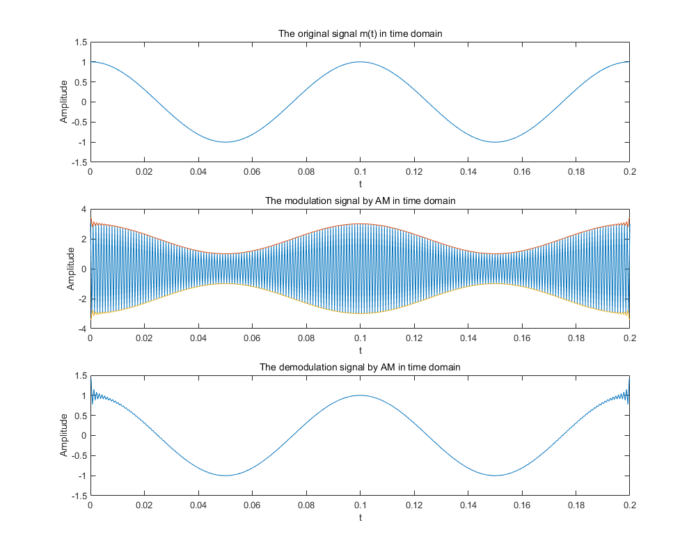
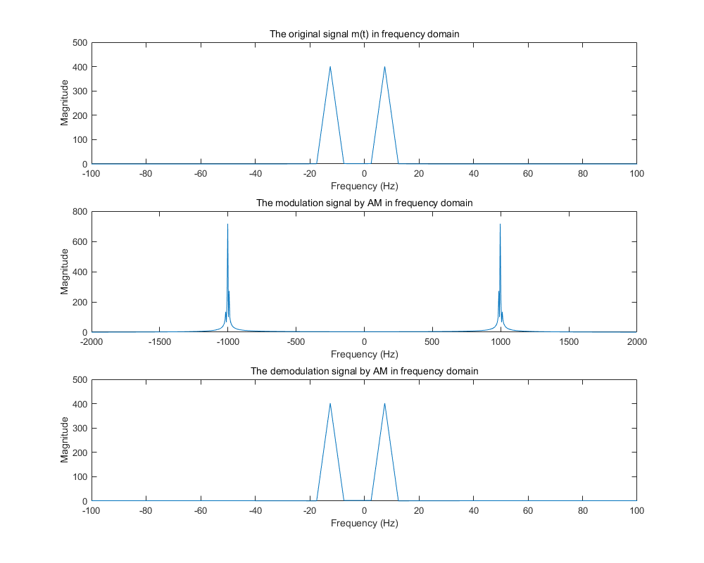
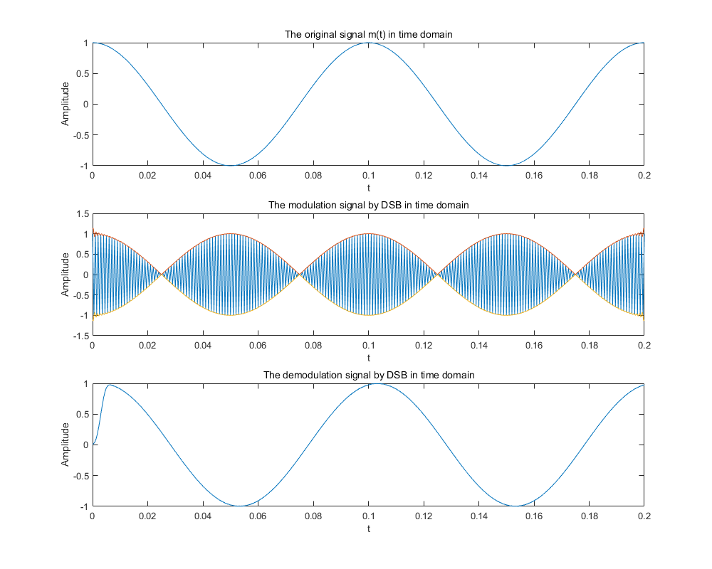
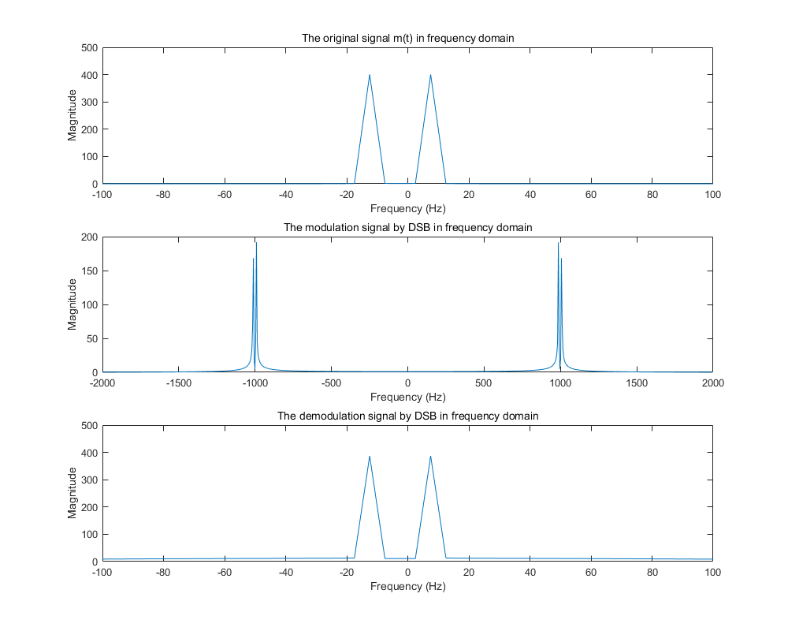
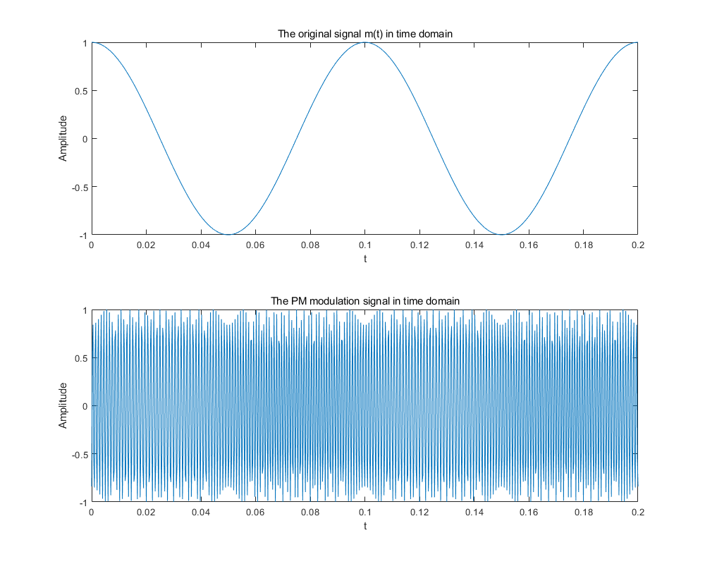
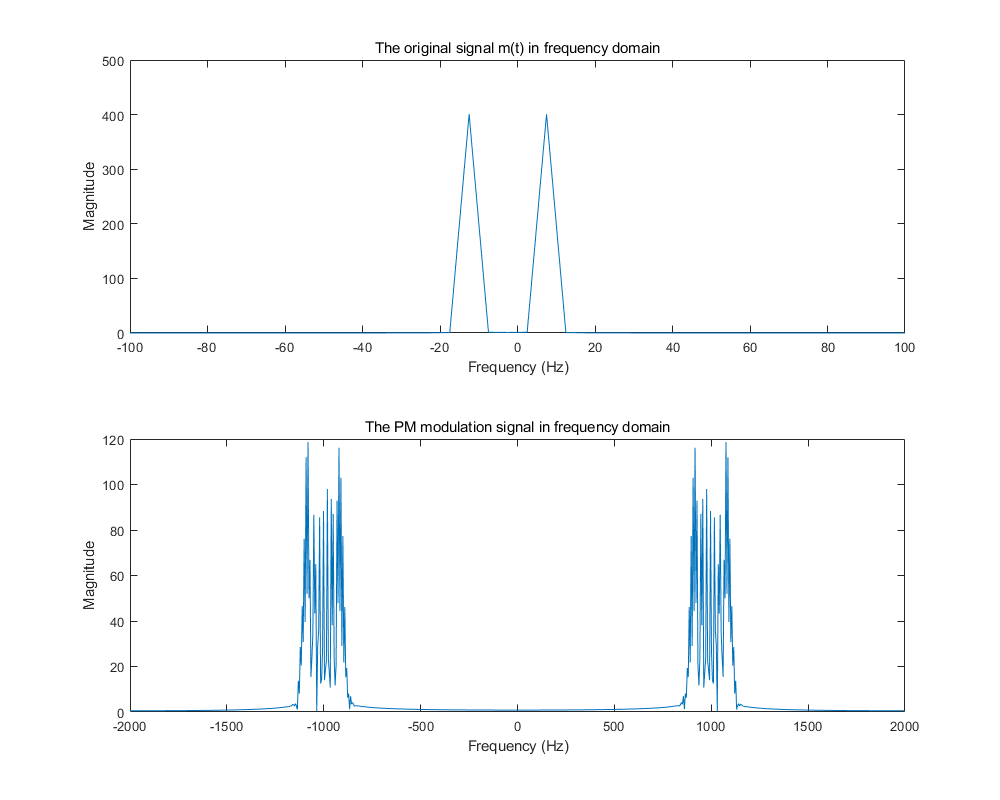

Fs = 4000;
Fc = 1000;
t = 0:1/Fs:0.2;
DC = 2;
m_t = cos(2*pi*10*t);
figure(1)
set(gcf,'position', [250 200 1000 800]);
subplot(311)
plot(t, m_t, 'linewidth', 0.5)
ylim([-1.5,1.5])
title('The original signal m(t) in time domain')
xlabel('t')
ylabel('Amplitude')
m_t_am1 = ammod(m_t+DC, Fc, Fs);
m_t_am2 = (m_t+DC) .* cos(2*pi*Fc*t);
subplot(312)
plot(t, m_t_am2, 'linewidth', 0.5)
[up,low] = envelope(m_t_am2);
hold on
plot(t, up, t, low, 'linewidth', 0.5)
title('The modulation signal by AM in time domain')
xlabel('t')
ylabel('Amplitude')
m_t_am_de = hilbert(m_t_am2);
subplot(313)
plot(t, abs(m_t_am_de)-DC, 'linewidth', 0.5)
ylim([-1.5,1.5])
title('The demodulation signal by AM in time domain')
xlabel('t')
ylabel('Amplitude')
m_t_w = fft(m_t);
n = length(m_t);
fshift = (-n/2:n/2-1)*(Fs/n);
m_t_w_shift = fftshift(m_t_w);
figure(2)
set(gcf,'position', [250 200 1000 800]);
subplot(311)
plot(fshift, abs(m_t_w_shift), 'linewidth', 0.5)
xlim([-100, 100])
title('The original signal m(t) in frequency domain')
xlabel('Frequency (Hz)');
ylabel('Magnitude');
m_t_am2_w = fft(m_t_am2);
m_t_am2_w_shift = fftshift(m_t_am2_w);
subplot(312)
plot(fshift, abs(m_t_am2_w_shift), 'linewidth', 0.5)
xlim([-2000, 2000])
title('The modulation signal by AM in frequency domain')
xlabel('Frequency (Hz)');
ylabel('Magnitude');
m_t_am_de_w = fft(abs(m_t_am_de)-DC);
m_t_am_de_w_shift = fftshift(m_t_am_de_w);
subplot(313)
plot(fshift, abs(m_t_am_de_w_shift), 'linewidth', 0.5)
xlim([-100, 100])
ylim([0, 500])
title('The demodulation signal by AM in frequency domain')
xlabel('Frequency (Hz)');
ylabel('Magnitude');
m_t_dsb = m_t .* cos(2*pi*Fc*t);
figure(3)
set(gcf,'position', [250 200 1000 800]);
subplot(311)
plot(t, m_t, 'linewidth', 0.5)
ylim([-1,1])
title('The original signal m(t) in time domain')
xlabel('t')
ylabel('Amplitude')
subplot(312)
plot(t, m_t_dsb, 'linewidth', 0.5)
title('The modulation signal by DSB in time domain')
xlabel('t')
ylabel('Amplitude')
[up,low] = envelope(m_t_dsb);
hold on
plot(t, up, t, low, 'linewidth', 0.5)
m_t_dsb_de = m_t_dsb .* cos(2*pi*Fc*t);
cutoff_frequency = 2*10;
order = 26;
b = fir1(order, cutoff_frequency/(Fs/2));
m_t_dsb_de = 2*filter(b, 1, m_t_dsb_de);
subplot(313)
plot(t, m_t_dsb_de, 'linewidth', 0.5)
ylim([-1,1])
title('The demodulation signal by DSB in time domain')
xlabel('t')
ylabel('Amplitude')
figure(4)
set(gcf,'position', [250 200 1000 800]);
subplot(311)
plot(fshift, abs(m_t_w_shift), 'linewidth', 0.5)
xlim([-100, 100])
title('The original signal m(t) in frequency domain')
xlabel('Frequency (Hz)');
ylabel('Magnitude');
m_t_dsb_w = fft(m_t_dsb);
m_t_dsb_w_shift = fftshift(m_t_dsb_w);
subplot(312)
plot(fshift, abs(m_t_dsb_w_shift), 'linewidth', 0.5)
xlim([-2000, 2000])
title('The modulation signal by DSB in frequency domain')
xlabel('Frequency (Hz)');
ylabel('Magnitude');
m_t_dsb_de_w = fft(m_t_dsb_de);
m_t_dsb_de_w_shift = fftshift(m_t_dsb_de_w);
subplot(313)
plot(fshift, abs(m_t_dsb_de_w_shift), 'linewidth', 0.5)
xlim([-100, 100])
ylim([0, 500])
title('The demodulation signal by DSB in frequency domain')
xlabel('Frequency (Hz)');
ylabel('Magnitude');
Kp = 10;
Sp_t = cos(2*pi*Fc*t + Kp.*m_t);
figure(5)
set(gcf,'position', [250 200 1000 800]);
subplot(211)
plot(t, m_t, 'linewidth', 0.5)
ylim([-1,1])
title('The original signal m(t) in time domain')
xlabel('t')
ylabel('Amplitude')
subplot(212)
plot(t, Sp_t, 'linewidth', 0.5)
title('The PM modulation signal in time domain')
xlabel('t')
ylabel('Amplitude')
figure(6)
set(gcf,'position', [250 200 1000 800]);
subplot(211)
plot(fshift, abs(m_t_w_shift), 'linewidth', 0.5)
xlim([-100, 100])
title('The original signal m(t) in frequency domain')
xlabel('Frequency (Hz)');
ylabel('Magnitude');
Sp_t_w = fft(Sp_t);
Sp_t_w_shift = fftshift(Sp_t_w);
subplot(212)
plot(fshift, abs(Sp_t_w_shift))
title('The PM modulation signal in frequency domain')
xlabel('Frequency (Hz)');
ylabel('Magnitude');
     